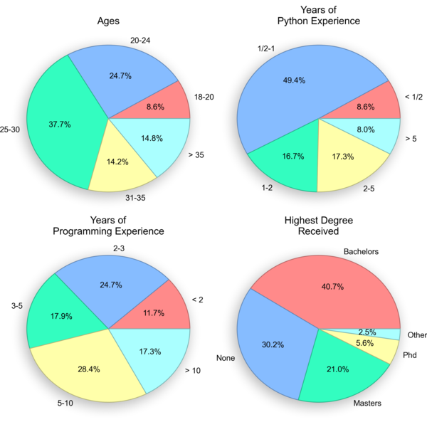
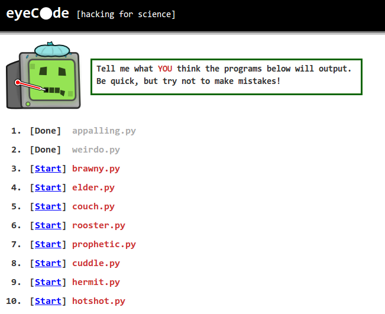
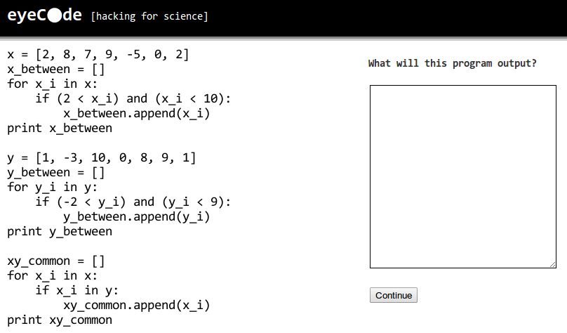
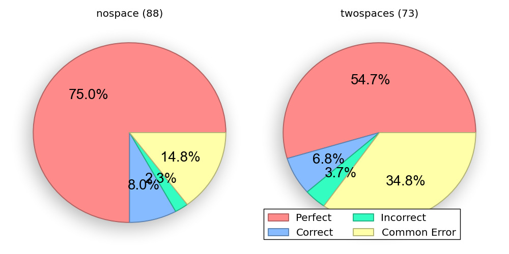
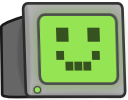

What Makes Code Hard to Understand?
Posted: 2013-04-26 | More posts about programming research python[arXiv paper] [eyeCode data set]
What factors impact the comprehensibility of code? In this blog post, I'll describe an experiment I did with my advisors Andrew Lumsdaine (Computer Science) and Rob Goldstone (Cognitive Science) at Indiana University.
We asked 162 programmers to predict the output of 10 small Python programs. Each program had 2 or 3 different versions, and we used subtle differences between program versions to demonstrate that seemingly insignificant notational changes can have big effects on correctness and response times. I'll go over some of the results here, hopefully to whet your appetite for the paper.
The Programmers
We had 162 programmers (129 males, 30 females, 3 unreported) participate from Amazon's Mechanical Turk (130 people), the local Bloomington, IN area (29 people), and via e-mail solicitations (3 people). All participants needed to have some programming experience, and the Mechanical Turkers were required to pass a simple Python quiz before taking the experiment.
Here's a breakdown of the participant demographics: 
We paid the local participants $10 each because they also had to come in to the lab and do the experiment in from of an eye-tracker (see my previous post for a video). The folks from Mechanical Turk got $0.75, which is a lot more than the penny I see most people offering for surveys!
The Experiment
The experiment consisted of a pre-test survey, 10 trials (one program each), and a post-test survey. The pre-test survey gathered information about the participant's age, gender, education, and experience. Participants were then asked to predict the printed output of 10 short Python programs, one version randomly chosen from each of our program base types.
Here's a shot of the main screen that participants used to drill down into each trial:

An individual trial consisted of the program's code (unhighlighted) and a text box where the participant could write what they thought the program would output.

The presentation order and names of the programs were randomized, and all answers were final (i.e., no going back). Although every program actually ran without errors, participants were not informed of this fact beforehand. The post-test survey gauged a participant's confidence in their answers and the perceived difficulty of the task.
The Data
We collected a total of 1,602 trials from the 162 participants starting November 20, 2012 and ending January 19, 2013. Trials were graded semi-automatically using a custom grading script (available here). Grades were assigned like this:
- Perfect (10 points) - response exactly matched the program's output (about 63% of trials)
- Correct (7-9 points) - response had the right numbers or letters, but incorrect formatting (e.g., wrong whitespace, commas, brackets)
- Common error (2-4 points) - response was incorrect, but given by at least 3 other participants
All other responses were graded manually (about 12% of the trials). Any trial that was restarted was discarded. This only happened, though, if the participant reloaded the web page or fiddled with the URL to try and change their answer.
We had a total of 25 Python programs in 10 different categories. These programs were designed to be understandable by a wide audience, and therefore did not touch on Python features outside of a first or second introductory programming course. This worked out great for our eye-tracking experiment because we got a lot of examples of programmers successfully comprehending a program and predicting its output. The programs were probably a bit too easy, though, as evidenced by the large number of perfect trials (62%). If we add in correct grades (minor formatting errors), that figure rises to 73%. This made it tough to distinguish experienced programmers from inexperienced programmers using grades alone.
Results
Because this is a blog post, I'll only be discussing a handful of the results. I'll also stick with graphical comparsions, and try to avoid talking about stats. If you want all of that stuff, the paper is chock full of it!
Whitespace and Loops
The counting program had two versions that differed only their whitespace. Here's the "nospace" version:
for i in [1, 2, 3, 4]: print "The count is", i print "Done counting"
When run, this program produces the following output:
The count is 1 Done counting The count is 2 Done counting The count is 3 Done counting The count is 4 Done counting
To most people, this is clearly a bug -- "Done counting" should probably only be printed once at the end. Nevertheless, this is what the program says to do.
Now, let's take a look at the "twospaces" version:
for i in [1, 2, 3, 4]: print "The count is", i print "Done counting"
This version had two blank lines (vertical spaces) between the print statements. The meaning of the program doesn't change in Python, but we saw a big change in the distribution of grades.

In the "nospace" version, 75% of the participants got the answer correct character-for-character (perfect). If we include minor formatting mistakes (correct), that figure rises another 8%. Contrast this with the "twospaces" version, where more than twice as many people guessed the following (wrong) output:
The count is 1 The count is 2 The count is 3 The count is 4 Done counting
We were even more surprised to find that years of Python experience didn't
see to make a difference in the odds of making this mistake. Perhaps Python
could do with a required end token?
Expect the Unexpected
What do you suppose this program outputs?
def add_1(num): num = num + 1 def twice(num): num = num * 2 added = 4 add_1(added) twice(added) add_1(added) twice(added) print added
If you're like half of the programmers in our experiment, you answered 22.
Take another look, and you'll realize that add_1() and twice() don't
actually return anything. The main body also doesn't reassign anything to the
added variable. This means that added retains its initial value, making the
final result just 4.
Why did 50% of our participants get this program wrong? There is a strong expectation amongst programmers that you don't include code that won't be used. Elliot Soloway identified this and other maxims (or rules of discourse) in 1984. Like conversational norms, these unwritten rules can have a powerful influence on interpretation.
Many modern editors will warn about unused local variables, but this seems to be
something more. The add_1() and twice() functions don't really do
anything, even though they assign a new value to num. It may be useful to
quantify how programmers differentiate between functions that do things and
functions that don't in order to provide better warnings.
Reading between the Lines
The longest program in our study was between. It filtered down two lists, printed the results, and then printed the intersection of the (original) two lists. We had two versions, "functions" and "inline", where the filtering and intersection operations were either contained in separate functions or inlined in the main body.
We didn't see a big difference in grades or response times, though about 10% more participants gave a correct answer on the "inline" version. There was, however, an interesting common error that more experienced programmers tended to make. Here's the code for the "inline" version:
x = [2, 8, 7, 9, -5, 0, 2] x_between = [] for x_i in x: if (2 < x_i) and (x_i < 10): x_between.append(x_i) print x_between y = [1, -3, 10, 0, 8, 9, 1] y_between = [] for y_i in y: if (-2 < y_i) and (y_i < 9): y_between.append(y_i) print y_between xy_common = [] for x_i in x: if x_i in y: xy_common.append(x_i) print xy_common
The correct output is this:
[8, 7, 9] [1, 0, 8, 1] [8, 9, 0]
but about 22% of our participants gave this answer instead:
[8, 7, 9] [1, 0, 8, 1] [8]
This would be the right answer if the intersection (common) operation was performed on the filtered lists instead of the original lists. Curiously, the average experience level in the mistaken 22% was a good bit higher than in the overall group. We hypothesized that this may represent another "rule of discourse" -- later computations should follow from earlier ones.
More experienced programmers may be expecting the intersection, which comes later than the filtering, to make use of the filtered lists. We think that moving the intersection before the filtering operations would eliminate the error, but we're interested to hear what changes others think would help programmers avoid this mistake.
Want More?
If you'd like to see all of the results, make sure to check out the full paper. For a more comprehensive review of the psychology of programming, I'd recommend the book Software Design: Cognitive Aspects. It has a great overview of the field and its findings up to around 2000.
Some more recent scientific work includes Raymond Buse's code readability study, Christopher Douce's "Stores" model of code cognition, and Roman Bednarik's eye-tracking experiments. As was mentioned in the Hacker News thread related to the paper, there's even an entire conference dedicated to studying program comprehension! My work is inspired by these and other great scientists.
Data
You're welcome to take a look at the data. It's available on Github in XML format along with some of my plotting and analysis scripts. If you end up using the data for your own research, please cite us!

Contents © 2013 Michael Hansen - Powered by Nikola